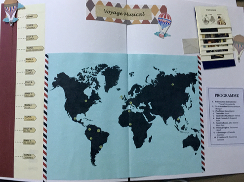

Mon parcours artistique
MUSIQUE
Tout au long de mon expérience artistique, j'ai eu l'occasion de réaliser différentes collaborations. Cela m'a permis de m'adapter aux spécialités de chaque forme d'art et a également contribué au développement de ma créativité.
J'ai commencé avec la musique à l'age de 8 ans. J'allais presque tous les jours au conservatoire pour faire des cours de violon, solfège et orchestre. À 15 ans j'ai fait une pause mais à 18 ans j'ai returné pour faire une licence. J'ai étudié à l'academie des arts de Bogota, un endroit où les arts se retrouvent. J'ai eu l'opportunité de partager avec des comèdiens, plasticiens et danseurs.
LA VILLE
Musique et image
La ville est un projet en cours qui mélange image, musique et une histoire. Des petites histoires se succedent derrière les fênetres de cette grande ville.

SOUVENIRS
Arts plastiques et musique
Projet réalisé pour créer des relations entre musique et image
Réalisation de 4 structures contenant des lumières. Les rythmes produites par les lumières étaient la base pour la composition musicale.
PIZZICATO
Musique et danse
Projet réalisé avec des danseurs. Mise en scène
LES ANIMAUX ÇA CONTE ENORMÉMENT
Conte et musique
Projet réalisée avec la compagnie DINAMICONTE. Philippe, conteur et moi en violon et violoncelle. Spectacle pour enfants. Lien
THEATRE DU SILENCE
Musique et theatre
Collaboration avec la "Casa del Silencio" à Bogota. Theatre du geste

Ateliers
J'ai réalisé des differents projets pédagogiques pour jeunes et adultes.
Voyage Musical
Scrapbooking

Origami et Pop-Up